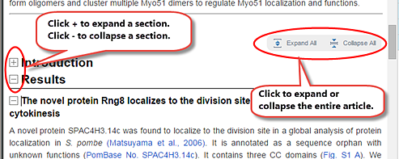
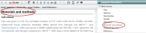

Use the scroll buttons and mouse wheel to navigate through the article or you can use the article panel next to the article text. You can also use the Search box to find text in your article.
When you first open an article, ArticleExpress displays it with all sections collapsed. You can expand or collapse individual sections or the entire article. These on-screen controls do not appear in the final output.

Note: When you expand one section, ArticleExpress collapses the other sections. However, If you click Expand All, ArticleExpress expands all the sections in your article. If you expand all the sections, you might experience a delay in edits appearing on screen. For faster performance, collapse the sections you aren't currently editing.
ArticleExpress displays WidgetsComponents within the application that allow navigation to article sections, figures, tables, author queries, comments, file attachments, and tutorials. to the right of your article, underneath the Help/Download PDF/Logout menus.
Click each widget heading to see its list of items. Click an item in the list to be taken to that section, query, figure, table, comment, etc., as seen here: 
For figures and tables, ArticleExpress displays them as thumbnails in the Article widget. 
Click a numbered tab to see another figure or table. Click See figure in text or See table in text to view the item within the article.
These three command buttons affect your article and its edits.
If you are a Corresponding Author (or a CollaboratorA colleague to whom you give permission to perform edits, commenting, or other tasks on your article. who has been given full-proxy access), ArticleExpress accepts your edits by default. If you haven't collaborated with other colleagues, you do not need to click Accept Edits and ArticleExpress accepts all changes. Alternatively, you can view all edits (yours and those of your Collaborators) in Review mode, accepting and rejecting changes as desired.
Click Save to save your edits.
When all changes are complete and you have answered all Author Queries, click Submit. ArticleExpress submits the edited article to the Production Editor for review. Once submitted, you may not make further edits to your article in ArticleExpress. You can, however, use your article URL to access a read-only version of your article up to 30 days after submission. If you've submitted your article and need to make changes, contact your Production Editor.
Why Can't I Submit?
You must answer all queries before you can submit your article for processing. For more information and procedures, see Author Queries.
navigation.htm | Copyright © 2015 Dartmouth Journal Services All Rights Reserved.
{kind=link}